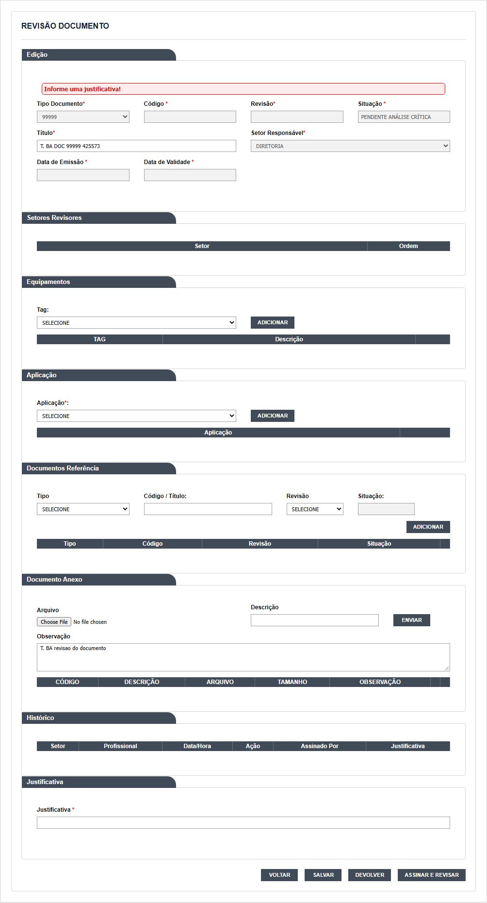
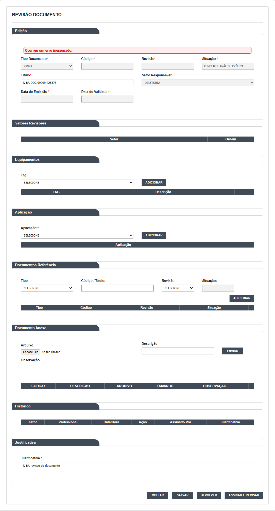
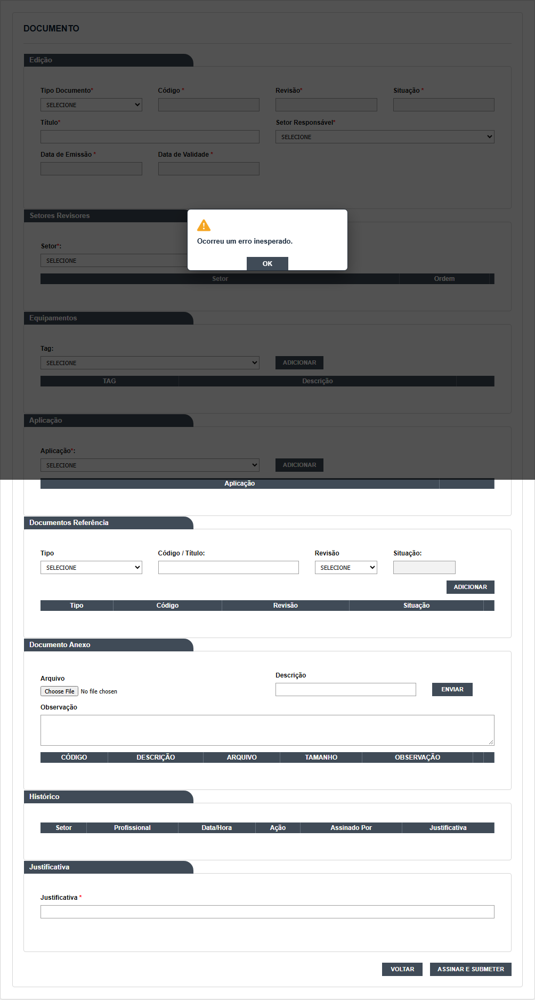

O que acontece ao confirmar ou salvar
- Assinar e revisar: grava REVISADO no histórico, com o assinante, e avança o documento (próximo setor ou Pré-Aprovação).
- Salvar: grava título e quadros com justificativa, sem mudar a situação (do legado; a confirmar).
- Devolver: muda a situação sem pedir senha e sem registro no histórico.
O que o sistema recusa
| Situação | Mensagem exata | Observação |
|---|---|---|
| Assinar sem justificativa | "Informe uma justificativa!" | Faixa vermelha no alto |
| Senha ou usuário errados | "Autenticação inválida!" | Documento continua pendente (CT-DOC-007) |
| Perfil só de revisão (sem a função Documento) | "Ocorreu um erro inesperado." | 403 na primeira chamada de "ASSINAR E REVISAR" (DV-DOC-N-008) |
| O elaborador abre o próprio documento | "Ocorreu um erro inesperado." e formulário vazio | A chamada responde 404 (documento não aparece na lista dele); revisar responde 409 "O usuário que criou a revisão não pode revisar o próprio documento." |
| Título vazio (do legado; a confirmar) | "Defina um Título!" | |
| Usuário que não é o da vez (do legado; a confirmar) | "Usuário não pode revisar o documento!" |

A imagem acima mostra a faixa vermelha "Informe uma justificativa!" com o campo Justificativa vazio. (O texto digitado no campo "Observação" do anexo nessa captura foi engano do teste, não é uma regra da tela.)

A imagem acima mostra a faixa vermelha "Ocorreu um erro inesperado." depois de a conta só de revisão (T.BA41) clicar em ASSINAR E REVISAR com a justificativa preenchida.

A imagem acima mostra a caixa "Ocorreu um erro inesperado." sobre um formulário vazio, quando o autor do documento 179 abre a revisão pelo endereço direto.
Campos da tela
| Campo | Tipo | Tamanho | Obrigatório | Valores e regra | Observação |
|---|---|---|---|---|---|
| Tipo Documento (filtro) | Lista | — | Não | TODAS = sem filtro | |
| Código (filtro) | Texto | até 20 | Não | Vazio nesta etapa | |
| Revisão (filtro) | Número | até 5 dígitos | Não | Só números | (do legado; a confirmar) |
| Setor Responsável (filtro) | Lista | — | Não | ||
| Título (filtro e edição) | Texto | até 300 | Sim na edição | Editável | "Defina um Título!" (do legado; a confirmar) |
| Tipo, Código, Revisão, Situação, Setor Responsável, datas | — | — | Bloqueados | Só leitura | |
| Setores Revisores | Tabela setor e ordem | — | Só leitura | Não se altera aqui | Vazia para as contas de papel (DV-DOC-N-001) |
| Tags, Aplicação, Documentos Referência, Documento Anexo | Quadros | — | Não | Permitem incluir e excluir | (do legado; a confirmar) |
| Justificativa | Texto | — | Sim | "Informe uma justificativa!" | Conferida pela tela |
| Usuário e senha | Texto | — | Sim, só em ASSINAR E REVISAR | "Autenticação inválida!" |
Quem pode usar (permissões)
| Perfil de teste | Vê o documento na lista | ASSINAR E REVISAR |
|---|---|---|
| Revisão + Visualizar (T. BA DOC REVISOR, conta T.BA41) | Sim | 403 (erro inesperado), DV-DOC-N-008 |
| Todas as funções do módulo (T.BA43) | Sim | Sim: "Alteração efetuada com sucesso." |
| Administrador de teste (autor do documento) | Não (autor) | 409 ao tentar |
| Usuário só de consulta (rodada 1) | Tela abre com erro | 403 |
Mesmo a conta com todas as funções recebe 403 ao ler histórico, setores e anexos (DV-DOC-N-001), por isso os quadros aparecem vazios.